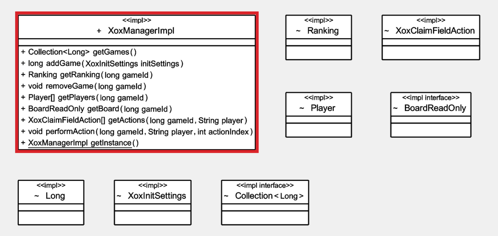
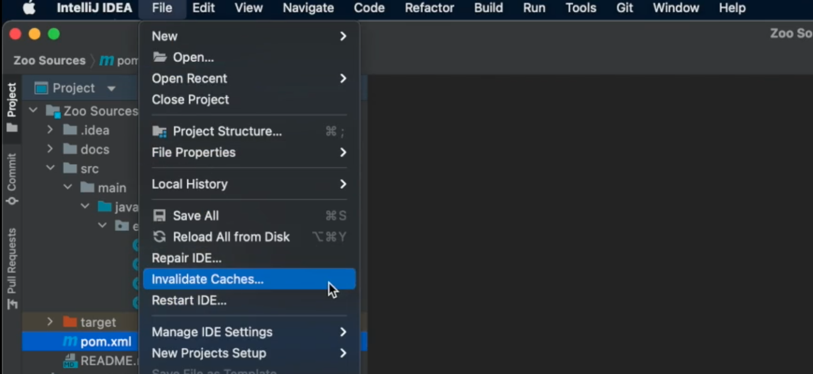
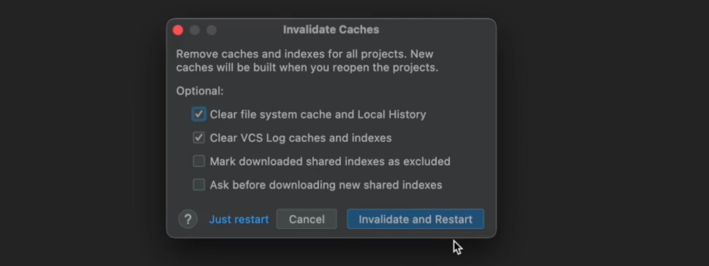

Task 1
Your first task is the conversion of Tic Tac Toe into a RESTful service.
Instructions
- All you need to do is replicate the steps shown on the Illustrations page for the requested app.
- Please now run a manual conversion of Tic Tac Toe into a RESTful service.
Legacy Application Details
Below diagram highlights classes and methods of the legacy Tic Tac Toe application, relevant to your RESTification task. For more information on theses methods, also consult the Tic Tac Toe online documentation.

Interface Description: Tic Tac Toe Resources and Methods
- Your interface should begin with a top-level resource "xox", offering two methods.
- A [GET] request to the "xox" resource should result in a lookup of all currently running games, as a list of game-identifiers.
- A [POST] request to the "xox" resource should allow adding of a new game instance. The identifier is generated on server side and does not need to be provided, however the request body should provide all parameters required as game settings.
- The "xox" resource should possess a dynamic placeholder subresource, representing individual game instances by identifier.
- A [GET] request on the identifier placeholder resource should retrieve scoring information for the targeted game.
- A [DELETE] request on the identifier placeholder resource should remove the game from the list of all games.
- The dynamic resource representing games by their identifier should have two subresources: "players" and "board".
- A [GET] request on the "players" resource should return a list of player names involved into the specified game. The game instance is in this case provided by value of the parent placeholder resource.
- A [GET] request on the "board" resource should return a snapshot of the current game board layout, is to say which cells empty or occupied by a given player. The game instance is in this case provided by value of the parent placeholder resource.
- The "players" resource should possess a dynamic placeholder resource, encoding the name of a given player. This resource has no methods, but in its turn a subresource "actions".
- A [GET] request on actions should return an array of possible actions for a given player in a given game. Each action represents the claim of an available field. The required player name is provided by the parent dynamic resource representing a player name and the game instance is provided by the value of the dynamic sub resource of the root resource.
- The "actions" resource should possess a dynamic placeholder resource that serves to identify the a specific selection of the actions available to a given player in a given game.
- A [POST] request on that dynamic placeholder resource should allow the selection of a given action, to perform it. The precise action is then identified by an int value taken by the dynamic resource, representing the position in the array of all possible actions. The required player name is provided by the parent dynamic resource representing a player name and the game instance is provided by the value of the dynamic sub resource of the root resource.
Click here to download interface description as file.
Troubleshoot
- Q: I open the project with IntelliJ, but everything is underlined in red.
A: The projet was not correctly opened. There are multiple potential fixes:
Option 1) Reloadpom.xml: Right click the file, then selectMaven -> Reload Project.
 Option 2) Verify the JDK version: Select
Option 2) Verify the JDK version: Select File->Project Structure.... Verify11.0.5is selected in the Project and SDKs tab:


Option 3) Invalidate IntelliJ caches: SelectFile->Invalidate Caches.... Then select the first two checkboxes:

 Option 4) Delete the cloned folder, clone the repository again, then make sure to open the project exactly as shown. - Q: I cannot compile / run the project, the green button is greyed out.
A: The project has no launch configuration by default, therefore the arrow in the top bar is not available. Open theRestLauncherclass instead and click on one of the green triangles, left of the code. - Q: I RESTified the application, but when I start it there is a Nullpointer-Exception.
A: Most likely the constructor code in one of the classes annotated with@RestControllerinvokes a call to an@Autowiredfield. Autowiring is only available after class initialization (after the constructor). Do not call any method with access to autowired fields in a constructor. Instead tell spring to call it after class initialization. Use the@PostConstructannotation. See@PostConstruct. - Q: I've made a mistake on project import, how can I start from scratch?
Delete the cloned folder, clone the repository again, then make sure to open the project exactly as shown. - Q: I've modified the
pom.xmlfile as shown, but IntelliJ still does not seem to know about Spring.
A: Sometimes the changes made to thepom.xmlare not automatically detected. (See first question,pom.xmlreload```.) - Q: IntelliJ asks me whether I want to trust the project sources. Should I?
A: Yes. This is just a security mechanism to prevent malicious code being executed on project import. The provided sources are all from us and can be trusted.